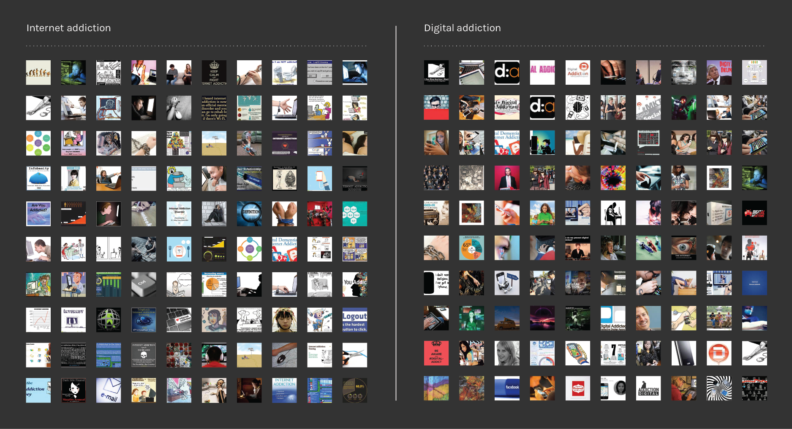
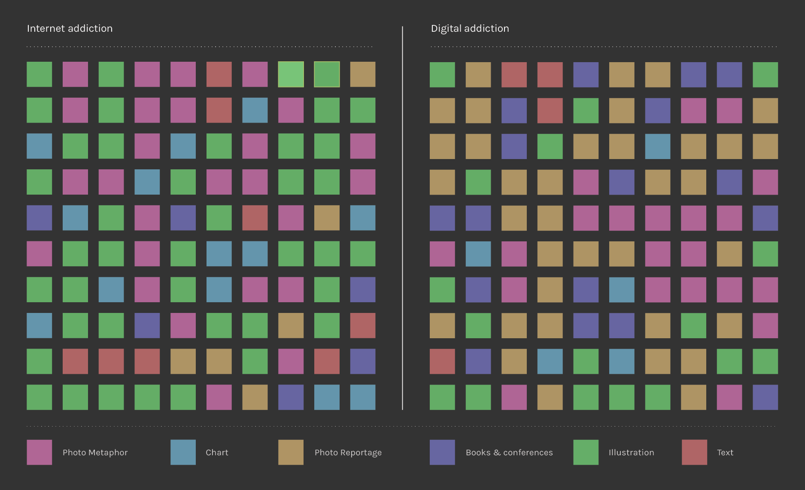

Introduction
After choosing the query “Internet Addiction” for the medical world and “Digital Addiction” for the on-line community, we have been analysing the Google Images results in order to have a more detailed view of the phenomenon. The first 100 images for each query have been considered, downloaded using a script and then put into a mosaic (see the image below).

The following step has been tagging each image according to its nature: metaphorical (pink), report/documentary (orange), statistic/chart (blue), illustration (green), textual (red), book/conference related (indigo). What we noticed is a majority of illustrated images for the query Internet Addiction and a predominance of report and documentary images for the query Digital Addiction. Metaphorical images are about the same for both queries (see the image below).
